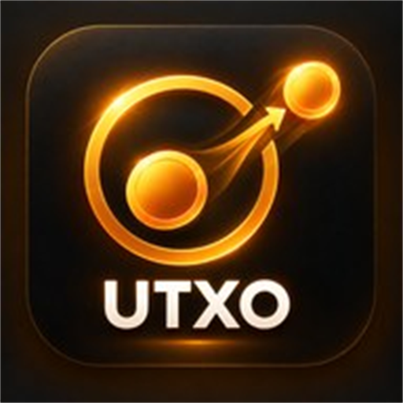

Run.
Record.
Repeat.
RUNBICKERSRecord.
Repeat.
01 / RUNNING · WEB & APP
Runbickers런비커스
달린 거리와 시간, 페이스와 경로를 기록하고
나의 러닝을 돌아보는 웹앱입니다.
다른 러너들과 함께 달리는 즐거움을 나눠보세요.
INDEPENDENT PROJECTS · 알약
달리는 일상부터 코인을 직접 다루는 순간까지.
직접 만든 앱과 웹 서비스를 이곳에 모았습니다.
01 / RUNNING · WEB & APP
달린 거리와 시간, 페이스와 경로를 기록하고
나의 러닝을 돌아보는 웹앱입니다.
다른 러너들과 함께 달리는 즐거움을 나눠보세요.

YOUR COINS. YOUR CHOICE.02 / BTCMOBICK · ANDROID
어떤 코인을 보낼지 직접 선택하세요.
BTCMobick의 UTXO를 확인하고,
금액과 수수료를 검토해 전송하는 오픈소스 도구입니다.
Android 출시 심사 중 · 2026.10.15 기준
현재 iOS 버전은 제공하지 않습니다.
IDEAS ARE WELCOME
사용하면서 느낀 점이나 개선 아이디어가 있다면 알려주세요.
runbickers@gmail.com ↗